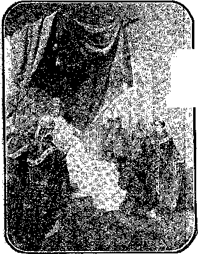
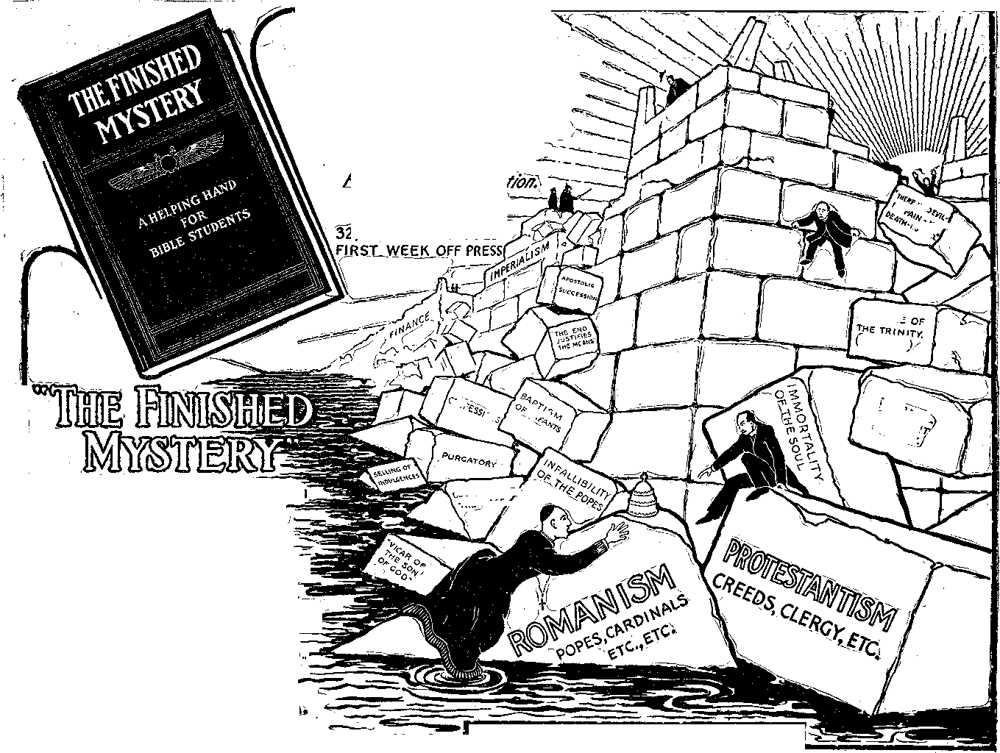

Vol. IX. BROOKLYN, N. Y. No. 9
CHURCH FEDERATION
“If the Wesleyans and the Church of England should reunite in the land of Wesley, what effect would it have on the Methodist body in this land?” asks The Literary Digest.
"The Churchman” (New York) hopes that the present discussion of the projected union in England will result in the drawing together of two separated religious communions.
“The Guardian” (London) publishes a letter from a Methodist clergyman, in which he says:
“We are asking whether the Church of England will allow Wesleyan ministers either to receive conditional ordination or, alternatively, to be ordained in a formula which would substitute the words ‘Church of England’ for the words ‘Church of God’ in the Prayer-Book formula. We are asking whether confirmation might, during a period of transition, be regarded as a domestic institution, not to be too rigidly enforced upon adult outsiders. We can see that some concessions must be made for the sake of healing our unhapnv divisions, and many of us are prepared, with that end in view, to accept reordination, even sans phrase if that should be absolutely necessary.”
METHODISM IN HOLY WRIT
As might have been expected, all the prominent Protestant systems are brought to” our attention in the Revela-tor’s depiction of the Papacy and the Reformation. To whatever extent the “daughters” have followed the course of the Mother Church in hiding the increasing light of Truth which discredits their time-worn creeds, to that extent the Lord has held them in derision. The following is the exposition of Revelation 9:1-12, in “THE FINISHED MYSTERY,” announced on page 4 of this paper:
9:1. And the fifth angel sounded.— The Reformation trumpets are referred to, four of which had sounded previous to the one here mentioned. The Lutheran, Anglican, Presbyterian and Baptist movements preceded the Wesleyan, which is now represented in fifteen kinds of Methodist organizations.—1 Cor. 3:3.
And I saw a star.—John Wesley became a star in the Anglican heavens in 1728, at which time he was ordained a priest by Bishop Potter.
Fall from heaven unto the earth.— Brother Wesley tore a large-sized hole in the ecclesiastical heavens when he began the manufacture of a firmament of his own. His work grew rapidly, particularly in America. Says the Encyclopedia Britannica, “The preachers in the South determined upon administration of the sacraments, and a committee was chosen who ordained themselves and others. John Wesley, aided by two presbyters of the Church of England, early in 1784, ordained Thomas Coke, a presbyter of that Church, as Superintendent.”
In 1787 the American Conference changed Mr. Coke’s title to “Bishop.”
It must have been a strange sight to see a bright man like Wesley engaging those two presbyters of the Church of England to help him ordain somebody to a higher office than any of them had ever held. But the plan worked. All Methodists believe that Bishop Coke, the first Bishop of the Methodist Church, received some “apostolic succession.” These brethren have been grieved that Pastor Russell did not get his ordination from the same source.
And to him was given the key of the ♦[bottomless] pit fOF THE ABYSS.— Wesley was given the key to nothing and to nowhere.
9:2. [And he opened the bottomless pit.]—Wesley opened nothing. He
(Continued on Page 2, Column 1.)
♦Words not in Sinaitic MS. are enclosed in brackets. The Sinaitic MS. is the oldest known copy of Scriptures.
fWords in Sinaitic MS. which do not appear in “Authorized” Version are printed in capitals.
THE FALL OF BABYLON
Ancient Babylon a Type—Mystic Babylon the Antitype
WHY CHRISTENDOM MUST NOW SUFFER—THE FINAL OUTCOME
The following article is extracted mainly from Pastor Russell’s posthumous volume entitled “THE FINISHED MYSTERY,” the 7th in the series of his STUDIES IN THE SCRIPTURES and published subsequent to his death. Pastor Russell held the distinction of being the most fearless and powerful writer of modern times on ecclesiastical subjects. In this posthumous volume, which is called “his last legacy to the Christians of earth,” is found a thorough exposition of every verse in the entire book of Revelation and also an elucidation of the obscure prophecy of Ezekiel. The book contains 608 pages, is handsomely bound in embossed cloth, 60c postpaid. Orders may be sent through us, if preferred.—Editorial Note.
THE various prophecies of Isaiah, Jeremiah, Daniel and the Apocalypse concerning Babylon are all in full accord, and manifestly refer to the same great city. And since these prophecies had but a very limited fulfilment upon the ancient literal city, and those of the Apocalypse were written centuries after the literal Babylon was laid in ruins, it is clear that the special reference of all the Prophets is to something of which the ancient literal Babylon was an illustration. It is clear also that, in so far as the prophecies of Isaiah and Jeremiah concerning its downfall were accomplished upon the literal city, it became in its downfall, as well as in its character, an illustration of the great city to which the Revelator points in the symbolic language of the Apocalypse (Chapters
17 and 1.8), and to which chiefly the other Prophets refer.
As already intimated, what to-day is known as Christendom is the antitype of ancient Babylon; and therefore the solemn warnings and predictions of the Prophets against Babylon—Christendom—are matters of deepest concern to the present generation. Would that men were wise enough to consider them! Though various other symbolic names, such as Edom, Ephraim, Ariel, etc., are in the Scriptures applied to Christendom, this term, “Babylon,” is the one most frequently used, and its significance, confusion, is remarkably appropriate. The Apostle Paul also points out a nominal Spiritual Israel in contradistinction to nominal Fleshly Israel (1 Cor. 10:18; Gal. 6: 16; Rom.
9:8); and likewise there is a nominal Spiritual Zion, and a nominal Fleshly Zion. (See Isa. 33:14; Amos 6:1.) But let us examine some of the wonderful correspondencies of Christendom to Babylon, its type, including the direct testimony of the Word of God on the subject. Then we will note the present attitude of Christendom, and the present indications of her foretold doom.
The Revelator intimated that it would not be difficult to discover this great mystical city, because her name is in her forehead; that is, she is prominently marked, so that we cannot fail to see her unless we shut our eyes and refuse to look—“And upon her forehead was a name written,. Mystery, Babylon the Great, the Mother of Harlots and abominations of the earth.” (Rev. 17:5.) But before looking for this Mystical Babylon, let us first observe the typical Babylon, and then, with its prominent features in mind, look for the antitype.
The name Babylon was applied, not only to the capital city of the Babylonian empire, but also to the empire itself. Babylon, the capital, was the most magnificent, and probably the largest, city of the ancient world. It was built in the form of a square on both sides of the Euphrates river; and, for protection against invaders, it was surrounded by a deep moat filled with water and Inclosed within a vast system of double walls, from thirty-two to eighty-five feet thick, and from seventy-five to three hundred feet high. On the summit were low towers, said to have been two hundred and fifty in number, placed along the outer and inner edges of the wall, tower facing tower; and In these walls were a hundred brazen gates, twenty-five on each side, corresponding to the number of streets which intersected each other at right angles. The city was adorned with splendid palaces and temples and the spoils of conquest.
Nebuchadnezzar was the great monarch of the Babylonian empire, whose long reign covered nearly half the period of its existence, and to him its grandeur and military glory were chiefly due. The city was noted for its wealth and magnificence, which brought a corresponding moral degradation, the sure precursor of its decline and fall. It was wholly given to idolatry, and was full of iniquity. The people were worshippers of Baah to whom they offered human sacrifices. The deep degradation of their idolatry may be understood from Gods reproof of the Israelites when became corrupted by contact with them.—See Jer. 7:9; 19:5.
Nebuchadnezzar was succeeded In the dominion by his grandson Belshazzar, under whose reign came the collapse which pride, fulness of bread and abundance of idleness always insure and hasten. While the people, all unconscious of impending danger, following the example of their king, were abandoning themselves to demoralizing excesses, the Persian army, under Cyrus, stealthily crept in through the channel of the Euphrates (from which they had turned aside the water), massacred the revelers, and captured the city. Thus was fulfilled the prophecy of that strange handwriting on the wall—“Mene, Mene, Tekel, Upharsin”—which Daniel had interpreted only a few hours before tq mean, “God hath numbered thy kingdom and finished it. Thou art weighed in the balance and art found wanting. Thy kingdom is divided and given to the Medes and Persians.”. So complete was the destruction of that great city that even its site was forgotten and was for a long time uncertain.
Such was the typical city; and, like a great millstone cast into the sea. it was sunken centuries ago, never again to rise: even the memory of it has become a reproach and a byword. Now let us look for its antitype, first observing that the Scriptures clearly point it out, and then noting the aptness of the symbolism.
Mystic Babylon—“Christendom”
In symbolic prophecy a “city” signifies a religious government backed by power and influence. Thus, for instance, the “Holy City, the New Jerusalem” is the symbol used to represent the established Kingdom of God, the overcomers of the Gospel Church exalted and reigning in glory. The Church is also, and in the same connection, represented as a woman, “the Bride, the Lamb’s Wife,” in power and glory, and backed by the power and authority of Christ, her Husband. ‘•‘And there came unto me one of the seven angels . . . saying, Come hither, I will show thee the Bride, the Lamb’s Wife. And he . . . showed me that great city, the holy Jerusalem.”—Rev. 21:9, 10.
This same method of interpretation applies to Mystical Babylon, the great (Continued on Page 2, Column 3.)
I. B. S. A., Publisher.
! 13, 15, 17 Hicks St., Brooklyn, N. ¥,
■ ’ Monthly—12c. a year. Single copies, le.
An Independent^ Unsectarian Re-
, jlgious Newspaper, Specially Devott-d to the Forwarding of the Laymen’s Home Missionary Movement tor the Glory of God and Good of Humanity.
Ministers of the I. B. S. A. render their Services at funerals free of charge. Tney ialso invite correspondence from those (desiring Christian counsel.
METHODISM IN HOLY WRIT ©Continued from Page 1, Column 1.) did interpret Rom. 8:21 as meaning that tne lower animais would go to Heaven, but that was an error. He Was honest enough, however, to object to using tne word 'trinity because he did not find it in the Bi me. ‘‘Christian Advocates” please note.
And there arose a smoke.—Confusion—a bnnaing haze.
[Out of] OVER the pit.—In the “air,” the ecclesiastical heavens.
As the smoke of a great furnace.— Methodism was no ordinary srnuuge.
And the sun.—The true Gospel.
And the air.—Ine Anglican Church.
Were darkened by reason of t.i© Smoke of the pit.—Methodism damaged the Anglican communion as much as it did the Truth.
9: 3. And there came out of the smoke locusts.—An immense number Of followers.—Judges 7:12.
Upon the earxn.—Among order-loving people.
And unio them was given power.—■ To attend an oiu-time Methodist meeting and witness tne "geumg tne power” was to see the tsigfit of a liie^ tame.
As the scorpions of the earth have power.—"A well-known injurious in-aeet of hot chmaies. The s<mg, which ds situated, at th© extremity of the tail, Sias at its base a .gland that secretes a poisonous fluid, wrnch is discharged into tne wound by two minute orifices At its extremity. The eeorptoa makes ® paimul wound to men and beasts which produces fatal results unless
the names of blasphemy. A woman [moth-er .cf apostate churches, her daughters] sat upon, a scarlet colored beast [so-called Christendom], hcld-whieh produces ratal results umess tog a golden cup full of abominations /©peedy nemeses be provided such as nnd-. mtaaness ©f her {church-state j .'Scarifying tne wound or sucking out to mi cation, .and upon her forehead the penson.”—McClintock and Strong, [m her mind, teachings] a ®ame /9:4,. And it was commanded them of’ Hario?? Y[the1 IpSto
Protestant churches, her daughters];, etc.—See 1 John 2:18, 22.; 4:3; Rev.
(3) ARIUS believed in the coming
of Antichrist in the Church. JHo was -Ron or entire consecration and
that they should not hurt tne grass of the -eartd.-men of independent -thought.—Rev. 8:7. .
{Neither any preen thing.] Neither
®ny tree,—Samt.—Rev. 8: L
But {only] Inose men,—Th© uncon-
Which have not the seal ©f God in their forenoa,ds.—Methodists understand that to be converted from being a sinner means to have th® seal nf God in one’s forehead. AH the .energies of Babylon, and Papacy ,as the Man of that church are devoted to gatnermg gin and .Antiehrirt,”
to poau to the sheepfold. (5) JOHN WYCLIFFE: “As touch-
9:5. And to them it was given that ing the Pope, I owe him neither suit ...... K ~ —u nc-r .services, forasmuch as I 'know him by the Scriptures to he Antichrist, the son of perdition, the open Adversary of God, and an abomination .standing in the Holy Place."
they should not kdl them.—No such sane and merciful sentence as "Tne wages of sin is death” has any -place jn Methodist theology. Wesley was horn at a time when the original meaning ©f the word “Holl” had become hid-,Gen, and was saturated with the later teachings that it signifies a place of (torment. He threw his whole heart into the work of spreading txiis -error throughout the ear ch.
But that they should be tormented ;five months.—In symbolic time, 150 years—5x30=150. (Ezek. 4:6.) Wesley became the first Methodist in 1728. (Rev. 9:1.) When the Methodist denomination, with all the others, was cast-off from favor in 18 i'8 (Rev. 3:14) sits powers to torment men by preaching What Presbyterians describe as ’‘Conscious misery, eternal in duration” came to an end legally, and to a large extent actually.—-uev. 9:1-0.
And their torment.—-The torment of those tormented by tne tormenting doctrine of torment.
Was ,as the torment of a scorpion, when he atriketh a man.—See Bev. 9:10.
9:6. And in those days.—Throughout the 150 years of widely prevalent "Methodist hell-fire.”
Shall men seek death.—Would be glad to know that “Tne wages of sin is ^death.”—Rom. 6:23.
And shall not find It.—Because all the texts which plainly teach that “All the wicked will God destroy,” were pe,i verted to mean “All the wicked will God immortalize in hell.”
And shall desire to die.—Real men would prefer to die -and stay dead rather than forever companion and worship the greatest devil of the Universe.
And death shall flee from them.— They were told that men only seem to <®e, although touch, bearing, sight and sSmcsH all bear eloquent .testimony to the contrary.—Rom. *6:23; Ezek. .18:4; Gen. 3:19; Psa. 115:17; Ecc. $;:5; Psa.
20; Ece. 3:19-21; 1 Cor. IS: 13, 18; Dan. 12:2.
ANTICHRIST
Through the press and through fecctosiastieal kingdom, “that great leaflets the story is being widely eir- city” (Rev. 17:1-6), which is desenoed eulated that Kaiser Wilhelm is th© as a bariot, a fallen woman (an apos-Antichrist. This is not the Bible tote churcn;—for the true Church is a View, however. There Antichrist is vyro'’'T‘' ovaitcd Mw«r and domin-©et, forth as a system, not as an individual. According to the Reformers
the real Antichrist is the Papacy. The effort to make the people believe that the Kaiser is Antichrist is doubtless a deception — dust-throwing — Papal camouflage, to divert attention from the real Antichrist—Papacy.
Everyone knows that the Kaiser is an instrument of the Devil. To accomplish his purpose, Satan appears as an angel of light. (2 Cor. 11:14.) To prevent people from seeing the real Antichrist, he directs attention to a lesser instrument of his.
The Apostles prophecied that Antichrist would arise in the Church. Afterwards many recognized the Papacy as Antichrist. Below we give the united testimony of the seven greatest reformers since Christ’s day.
(1) ST. PAUL said: "That Day shall net come except there come a falling away [Romanish apostasy] first, and that Man of Sin [Papacy] be revealed, the son of perdition [destruction]; who orposeth and ex-alteth himself above all that is called God or is worshiped; so that he as God [vicegerent] sitteth in the Temple of God.”—2 Thess. 2:2, 3.
(2) ST. JOHN—“Ye have heard that Antichrist [Papacy and Protestantism together] shall come. Ha is Antichrist that denieth [disowns in word or deed] the Father and the Son; . . . even already now it [the Papal-Protestant aggregation] is to the world.” A man child [Papacy] was to rule all nations with a rod of iron. A [wild] beast [a wicked, ungovernable church ruling like a fierce, evil government] out of the sea [peoples], having seven heads and ten horns {nations], unon his horns ten crowns and upon his heads
-----faithfulness to and dependence upon banished by the Papacy and his writ- «go £e -earned me away in
ings destroyed. ______ , the .spirit Into the wilderness,; .and I
(4) PEI LR WALDO. The Wffi- jgaw a woman, Babylon."—Rev. 17:1-5. densian a Treatise on Anuchrm , since the kingdoms of th© civ-
1Jrhnrrh ^s^'^t’^^r^rlot world have submitted to b©
Romsh Church as t^ largely dominated by th© influence of
ings destroyed.
If
(6) MARTIN LUTHER: “I am assured that the popedom is anti-christian and the seat of Satan—Antichrist of the Scriptures. Antichrist, as the .Scripture witnesseth, sitteth not in a stable of fiends, nor in a ;swine-sty, nor in a company of infidels,, but in the highest and holiest place of all—the Temple of God.'”
(7) PASTOR RUSSELL, the great twentieth century Reformer, writes about the Papal-Protestant combination in Vols. 2, 3 and 7 of his STUDIES IN THE SCRIPTURES. Read them; and you will see through the Papal-Protestant scheme to get control again, as in the clergy-ruled Dark Ages, throttle free speech, destroy liberty and rule Christendom through priests and preachers.
Antichrist and Image of the Beast.
Council of Caurcbes, are now preparing to grab everything in sight. Preliminary to this, and to close the people’s eyes to the recognition ©f Papacy as the Antichrist of the Scriptures, an ingenious attempt is being made to show that Kaiser Wilhelm is Antichrist, and that he will end his reign in February, 1918. That the war will end in February by the Papacy’s accomplishing the Kti ser’s overthrow, we think, quite reasonable; but this will put the real Antichrist (Papacy) to
power.
Then beware!—for the Pope can never exert temporal power, either
largely dominated by the influence of
EMPEROR LOUIS BEFORE THE POPE
the great ecclesiastical .systems, especially Papacy, acceptrn-g-from them the appellations "Christian nations” and “-Christendom,” and accepting on their authority the doctrine of the .“Divine right ©f kings,” etc., they also link themselves in with great Babylon, and become pant of it, so that, as in the type, the name Babylon applied, not only to the city, but also to the whole empire, here also the symbolic term "Babylon” applies,, not only to the great religious .organizations, Papal and Protestant, but also, in its is widest sense, to ail Christendom.
Hence this day of judgment upon Mystic Babylon is the day cf judgment upon all the nations of Christendom; its calamities involve the entire structure—civil, social and religious; and individuals will be affected by it
Just as J. P. Morgan, one of the prime movers for march federation, “financiered.-” the New Haven Railway and drained its very life-blood, so the Papacy and the Federal directly or indirectly in this country, without real trouble for the whole Panal-Protestant-Episcopal aggregation.! See Volume VII of .SCRIPTURE STUDIES for particulars.
THE FALL OF BABYLON (Continued from Page 1, Column 4.)
tdw VU.UA ULI “lUl UJUO uuu VWM.4 VW. virgin), exalted to power and dominion, and backed, to a considerable degree, by the kings of the earth, tn© civil powers, which are all more or less intoxicated with her spirit and doctrine. Tne apostate church lost her virgin purity. Instead of waiting, as an espoused and chaste virgin, for exaltation with the Heavenly Bridegroom, she associated herself with the kings of the earth and prostituted her virgin purity—of both doctrine and character—to suit the world’s ideas;
and in return she received, and now to some extent exercises, a present dominion, in large measure by their support, direct and indirect. This unfaithfulness to the Lord, whose name she claims, and to her high privilege to be the "chaste virgin” espoused to Christ, is the occasion of the symbolic appellation "harlot,” while her influence as a sacerdotal empire, full of inconsistency and confusion, is symbolically represented under the name Babylon, which, in its widest sense, as symbolized by the Babylonian empire, we promptly recognize to be Christendom; while in its mere restricted sense, as symbolized .by the ancient city Babylon, we recognize to be the nominal Christian church.
Tt has been very generally and very properly claimed by Protestants that the name "Babylon” and the prophetic description are applicable «to Papacy, though recently a more compromising disposition is less inclined so to apply it. On the contrary, every effort is now made on the part of the sects of Protestantism to conciliate and imi-
tate the Church of Rome, and to affiliate and co-operate with her. In so doing they become part and parcel with her, while they justify .her course and fill up the measure, of her iniquities, just as surely as did the scribes and Pharisees fill up the measure of their fathers who killed the Prophets. (Matt. 23:31, 32.) All this, of course, neither Protestants nor Papists are ready to admit, because in so -doing they would be condemning themselves. And this fact is recognized by the Revelator, who shows that all who would get a true view of Babylon must, in spirit, take their .position with the true people of God "in the wilderness”—in the condition of separation from the world and worldly ideas and
hand of recompense to that they alsq are to some extent bound in with the. nations of Christendom by various interests, commercial and others; and justly, too, to that they also have failed to appreciate what light they have seen, and have loved darkness rather than light, because their deeds were evil. Thus, as the Prophet declared, “All the earth [society] shall be devoured with the fire of God’s jealousy” (Zeph. 3:8); but against Babylon, Christendom, because of her greater responsibility and misuse of favors received, will burn the fierceness of His wrath and indignation.
But some sincere Christians, not yet awake to the decline of Protestantism, and who do not realize the relationship of the various sects to Papacy, but who perceive the unrest and the doctrinal upheavals in all the religious systems, may still be anxiously inquiring, “If all Christendom is to be involved in the doom of Babylon, what will become of Protestantism, the result of the Groat Reformation?” This is an important question; but let the reader consider that Protestantism, as it exists to-day, is not the result of the Great Reformation, but of its de-cline; and it now partakes to a large degree of the disposition and character of Rome, from which it sprang.
Babylon—Mother and Daughters
The Protestant sects (and we say it with all due deference to a comparatively few devout souls within them, wnom. the Lord designates as “wheat” in contradistinction to the overwhelming numbers of fares’’) are the true daughters of that degenerate system of nominal Christianity, the Papacy, to which the Revelator makes reference in applying to her the name “Mother of harlots." {Rev. 17:5.) And let it not pass unobserved that both Romanists and Protestants now freely own the relationship of mother and daughters, the former continually styling herself the Holy Mother Church, and the latter, with pleased complacency, endorsing the idea, as shown by many public utterances of leading Protestant clergymen and laymen. T.ius they “glory in their shame,” apparently all unmindful of the brand which they thus accept from the Word of God, which designates the Papacy as “th© mother of harlots.” Nor does the Papacy, to claiming her office of motherhood, ever seem to have questioned her right to that title, or to , considered its incompatibility with her profession still to be the only true Church, which the Scriptures designate a “virgin” espoused to Christ. Her acknowledged claims of motherhood are to the everlasting shame of bsth herself and her offspring. The true Church, which God recognizes, but which the world knows not, is still a virgin.; and from her pure and holy estate no daughter systems have .ever sprung. She is still a chaste virgin, true to Christ, and- dear to Him as the apple of His eye. (Zech. 2:8; Psa. 3.7:6, .$.) The true Church, cannot be pointed out anywhere as a company from which ail the tares have been separated, but it consists only of .the true “wheat,” and all such are known unto God, whether the world recog-sizes them or not.
But let us see how the Protestant systems sustain this relationship of daughters to Papacy. Since Papacy, the mother, is not a stogie individual, but a great religious system, in keeping with the symbol we should expect to see other religious systems answering to the illustration of daughters of similar character—not, of course, go old, or necessarily so depraved, as Papacy, but nevertheless “harlots” in the same sense; i.e., religious systems claiming to be either the espoused Virgin or the Bride of Christ, and yet courting the favor and receiving the . support of the world, at the price of disloyalty, to ;Chrfct. To this description the various Protestant organizations fully correspond. They are the great daughter systems. 'The birth of these-, various daughter -systems came in connection with reforms from the corruptions of the "Mother Church." The daughter systems parted from the mother under circumstances of travail, and were bom virgins. However, they contained more than true reformers; they contained many who still had the spirit of the mother, and they inherited many of her false doctrines and theories; and it was not long until they fell into many of her bad practices and proved their characters true to the prophetic stigma—"harlots.”
But let it not be forgotten that while the various reformation movements ■did valuable work in the “cleansing of the Sanctuary,” yet only the Temple class, the Sanctuary class, has ever been the true Church, in God’s reckoning. The great human systems called churches have never been more than nominally the ‘Church. They ail belong to a false system which counterfeits, misrepresents and hides from
to the -extent of their interest in, and ■dependence upon, its arrangements.
The nations beyond Christendom also feel the weight of the 1 aavy
the world the true Church, which IM ■composed only ©f fully consecrated and faithful believers, whp trust in th© merit of the one great Sacrifice for gins. These are to be found scattered . herb and there within. and outside of these human systems, yet always separate from their worldly spirit. They are th© “wheat” class of our Lord’s parabib, clearly distinguished by Him from the “tares.” Not comprehending ih® real character of these systems, as Individuals they have humbly walked i with God, taking His Word as their I counselor and His Spirit as their ttride. Nor have they ever been at ase in nominal Zion, where they have Often painfully observed that the spirit of the world, operating through the unrecognized “tare” element, endangered spiritual prosperity.' They ar© the blessed mourners in Zion, to whom •God hath appointed “beauty for ashes, and the oil of joy for mourning.” fMatt. 5:4; Isa. 61:3.) It is only in this “Harvest” time that the separation of this class from the “tare” element is due; for it was the Lord’s purpose to “let both grow together until the Harvest [the time in which we ar© /now living].” (Matt. 13:30.) Hence it -is that this class is now being awak-'ened to a realization of the real character of these condemned systems, because the “Harvest,” th© separating time, has come.
REVELATOR’S VISION OF OUR DAY
Let us now note some of the Rev-elator’s allusions to Babylon.
17:1,2. And there came one of the eeven angels which had" the seven vials, and talked with me, saying^ jCome hither; I will shew unto thee the Judgment of the great whore that aitteth upon many waters, with whom the kings of the earth have committed fornication and the inhabitants of the earth have been made drunk.—Th© Vision relates to the outpouring of th© seven last plagues upon Babylon ..^Christendom) at th© present time. The “great whore” refers to th© “Mother Church,” th© “Mother of harlots,” Papacy, which is the recognized parent of all the Protestant sects which have affiliated with earthly governments instead of keeping their virginity until Christ, the Heavenly Bridegroom, should come to receive His Bride unto Himself and to estab-
the Adriatic S.ea. At this time the’ Roman Empire became the two legs of NehUchandnezzar’s vision. At tn© time'the division was made the five potential races in the East were: th® Greeks,, Lombards, Ostrogoths,' Heruli and Vandals. The five potential races in th© West Were the Franks, Britons, Saxons, Visigoths and Suevi. During the next one hundred and fifty years great migrations and invasions have so. confused history that there is great difference of opinion among historians on many important details. It is plain, however, that three, of the migratory races disappeared from history, all within a few years oi each other, apparently in order to leave Rome and its environs free for the development of the Papacy. The Heruli, a race from Germanic territory, disappeared from Italian territory in A. D. 489; th© Vandals, a race from the shores of the Baltic (never in control of Rom© except oh a brief raid, but a great enemy of th® Papacy), disappeared in A. D. 534; and th© Ostrogoths, an Asiatic race, in A. D. 539. Th© Western Empire itself disappeared in A. D. 476. The matter is treated by Pastor Russell at greater length in Vol. III. of his “Studies in the Scriptures,” pp. 76, 77, and all his statements are, of course, correct. Se© Dan. 7:7, 20; Rev. 13:1, 17:3, 9-12; 1 Sam. 2:10; Deut. 33:17; 1 Ki. 22:11.
17:4. And the woman was arrayed ih purple.—Symbolizing the apostate church’s claim to royalty. “I sit a queen and am no widow.”—Rev. 18:7.
And scarlet color.—Symbolizing her claims to share in Christ’s werk of sacrifice, in the doctrine of the mass.
And decked with gold.—Symbolizing her claim that she induces in her membership all th© true Church of God, those who shall ultimately attain the Divine nature.
And precious stones.—Symbolizing her claim that she is the so.e custodian of the Lord’s precious jewels of truth and character.—1 Cor. 3:12;’ Mal. 3:17.
And pearls.—Symbolizing her claim that she has sole power over all tiiat the Lord bought by His death.—Matt. 13:45, 46.
pointment and authority of th© clergy has hindered God’s children from progressing in Divine things and bound them by the chains of Superstition and ignorance to th© veneration and adoration of fallible fellow-beings, and to their doctrines, traditions and interpretations of - God’s Word. It is this entire order of things that is to fall and pass away in the battle of this great day—the order of things which for centuries has held the people docile under the ruling powers, civil, Social and religious. All this has been by God’s permission (not by His appointment and approval, as they claim). But though an evil in itself, it has served a good, temporary purpose in preventing anarchy, which is immeasurably worse, because men were not prepared to do better for themselves, and because th© time for Christ’fe Millennial Kingdom had not yet come. Hence God permitted th© various delusions to gain credence in order to hold men in check until “Th© Time of the End”—the end of “Th© Times of the Gentiles” (which expired in autumn of A. -D. 1914, as shown in Pastor Russell’s “Studies in the Scriptures.” Vol. II., written twenty-five years before the outbreak of the war).
17:6. And I saw the woman drunken with the blood of the saints. —“But the blood of Protestants is hot called the blood of saints, no mor© than the blood of thieves, man-killers, and other malefactors, for the shedding of which, by the order of justice, no commonwealth shall answer,” so says the Rhemish (Catholic) translation, footnote. “She wore out th© saints of th© most high God,” and “was drunken with th© blood Of the
Having a golden cup In her hand.—-Symbolizing her claim that she Is th© repository of all Truth.—Jcr. 51:7.
Full of abominations and* [filthiness] fFILTHINESSES of [her] THE
-u— . fornication GF HER AND OF THE
whereon the wnore sttteth are Peoples. EARTH.—"Babylon hath been a golden and nations on ^hich she is, of cup in the Lord’s hand, that mad© all •course, dependent.. Th© kingdoms, «f earth drunken ; th© nations have
Europe today claim to be Chnsttaa, - - - • ...
kingdoms, and announce that their (Sovereigns reign “by the grace -of God,” i.e., through appointment of either Papacy or some of the Protestant sects. So great an institution as made all nations drunk with her false doctrines must be very prominent to those who were made so under the in
lish ' His long-promised Kingdom. Verse 15 explains that /‘the waters
ure earui urunKen; rue nations nave drunken of het wine; therefore the nations are mad [intoxicated with her errors] "—Jen 51:7-9; Rev. 18:6.
17:5. And upon her forehead was
saints.”—Rev. 18:24; 16:6.
And with the blood of the martyrsi of Jesus.—This Scripture was fulfilled in the Dark Ages, but we are still in the Dark Ages, and shall be until this system is destroyed. It takes more than a mere profession of faith to make a Christian. Jezebel today has daughters—systems termed Protestant »*«aWhich, nevertheless, copy largely ftu» mother’s spirit. It Is through the influence of the daughters that the antitypical Elijah may expect future persecutions, instigated by the mother, accomplished through the daughters, as typically represented in the case of John the Baptist, beheaded by Herod at the instance of Salome, but at the instigation of Herodias—Jezebel—symbol of Papacy.
ECCLESIASTICISM’S POLLUTION.
The Prophet Ezekiel, as God’s instrument, long centuries ago wrote the history of ecclesiasticism in prophetic language. There the Lord pointed out how the Catholic and Protestant systems would become the antitypical Babylon and would fall. We give here a few extracts from the words of the Prophet Ezekiel and comments thereon taken from
estant ecclesiasticism multiplied her worldly alliances; and the prominent and wealthy, “of the earth earthy," ,filled the churches with tares, worldlings, desirous of profiting by association with prominent people.
23:22. Thug ®aith the Lord God! Behold, I will raise up thy lovers against thee, from whom thy mind is alienated, and I will bring them against the© ch every side.—There* fore, O Protestantism, thus saith the t Lord Jehovah: I will raise up in? warfare and revolution the worldly‘it* people in thee, of whom thou art ' already sick, and bring them against the© on every side.
23:33. They shall be filled with drunkenness and sorrow and with th© cup of astonishment and desolation. —-Protestantism shall be intoxicated with the war spirit (Jer. 13:13), and later stupefied with astonishment at the ruinous results of her own course, ending in th© same cup of trouble, utter ruin, as confronts her mother-church, Catholicism.
24:8. That it might cause fury to come up to take vengeance: I hava set her blood upon the top of a rock, that it should not be covered.—Th© fury of a revolted soldiery and populace will rise up against the heads of the governments who also are heads of the churches, and will take ven* geance upon ecclesiasticism’s sins*
CLERGY RESPONSIBLE,
The clergy, as a class, have existed since tne third cenuury. Amongst them have been many, good, honest, noble Christian men. But by far the greater majority have been unfaithful, disloyal, unrighteous men. Alas, the unfaithful class prevails at this time, and the great climax has come! God foretold this centuries ago. In chapters 33 and 34 the Prophet Ezekiel scathingly arraigns this class, and points out how they ate responsible in a' greater degree than any other class of men on earth for th© present war and th© great trouble that shall follow.
34:3. Ye eat the fat, and ye clothe you with the wool, ye kill them that are fed: but ye feed not the flock.— Ye live on the choicest offerings of the people; ye “fleece” the, sheep of their golden fleece;, them that are fed to fatness with the Word of God ye kill spiritually if ye can. Ye have literally killed over fifty millions in bloody persecutions. Ye have preached millions into a dreadful death in the trenches. Ye do every-
fluence of the stupefying draught from her cup. “The wine of her fornication” has reference to the mixed doctrines, part truth and part error, that originally led to: the union of church and state—spiritual harlotry.—Jer. 51: 7; Rev. 1'7:5; 18:3; EteeK 16:15.
17:3. So he carried me away in the
a name written.—In plain sight of all the spiritually-minded. (And how-strange it is that everybody does not see ft!)
attentionyto”the Church. Pastor Russell’s last'messag©~td"the
of Christ is calfedThe ShrStSs to the world. We
Se “Mysterr 5f G?d”* ^8® that evm-y Christian
also ^awn^attention to th© fact that Wson» every order-loving man and attention, the fact that w<waan> carefifliy read these prophetic ' statements and comments, as Mly
the Scriptures refer to Babylon as a. counterfeit system (mother and' daughters—some more and some less. cor-
17:3, So carried me away in tn© rupt, some better and some poorer spirit into the wilderness; and l aaw counterfeits), and there designated th© a woman stt upon a scarlet colored “Mystery of Iniquity.”—2 Thes. 2:7.
Babylon the Great, the mother of harlots and abominations of the earth. —Since Papacy, th© mother, is1 not a single individual, but, a great religious system, in keeping with, the symbol we should expect to see other religious: systems answering to the illustration of daughters of similar character. To this description the various Protestant organizations fully correspond. —Ezek, 16<44!; Hos. 2:2-5;‘ feu i;-21; Rev. 18:9; 19:2.
The claims of apostolic succession and clerical authority ar© almost as1
beast, full of name© of blasphemy; tiaving seven heads and ten horns.— The “woman.” refers to the same character mentioned above,, the Papacy; and th© “scarlet-colored beast” is Pagan Rome and its successors. Th© symbol “beast” throughout, the Bibi© alludes to governments. Concerning th© “names of blasphemy,” we fljuote from Ferraris* Ecclesiastical Dictionary, a standard Roman Catholic authority, as given under the word papa,, article 2d: “The Pope is of such, dignity and highness that he 4 a not .simply a. man but as it were, God, and the vicar [representative] of God., . . « Hence th© Pope is crowned with a. triple crown, sas King of Heaven, of earth and of hell. Nay, the Pope’s excellence and power are not only above Heavenly, terrestrial and infernal things, but he is also above angels, and is their superior; so that it it were possible that angels could err from the faith,, or entertain sentiments contrary thereto, they could be judged and excommunicated hy the Pope.”
As for the “seven heads and. ten Borns” of the beast: the Eastern,, or Byzantine Ernntte, was founded in A. D. 395, when Theodosius divided the Roman Empire between his. two sons, Honorius and Arcadins, assigning to Earth” l.and invite the latter all the portion lying, east of - - - - J*------- -
presumptuously set forth by some of the Protestant clergy as by the Papal priesthood. And the right of individual private judgment—the very fundamental principle: of the protest against Papacy, which led: to the Great Reformation—is now almost as strenuously oppose® by Protestants as by Papists. Protestants^, seem to have forgotten—for they truly: ignore—th® ' very grounds of the original protest, and, as systems, they are fast: drifting . back toward the ©pen arms of th© '
set forth in Volumes IV and VII of his STUDIES IN 'THE- SCRIP* TURES, elsewhere announced.
Ezek. 23:13-17. Then I saw that she was defiled, that they took both one way. And that she increased her whoredoms.—God saw that both churches,. Romish and Protestant, were of. l&e tendency to church-state union, especially Protestantism; for she never saw or heard of a great, worldly naan, even down to. the total leader of the smallest rural community, that, she did not desire his influence and help—■particularly his money—and would systematically invite such to connect themselves with the ’church, .quite regardless of whether or not they remained worldly-
23:18. So she discovered her whoredoms, and discovered her nakedness; then My mind was alienated from her.—The newspaper writers* Socialists, anarchists and muck-rakers^ have exposed the worldiiness of the modern churches.
23:19, 21. Yet she multiplied her whoredoms, in calling to remembrance the days of her youth.—Prot
thing to the sheep but feed them. Did I aot command you thrice “Feed My sheep?”
34:4. The diseased have ye hot strengthened, neither have ye healed , that which was sick, neither have ye bound up that which was broken ♦ • • * * * but with force and with cruelty have ye ruled them.—Those weakened by spiritual disease—by the pestilence of false doctrines—ye have not strengthened with the pure. Word of God. Rather ye have thrown them poisonous, death-dealing doctrines from th© “table o£ devils.*' (1 Cor. 10 :21.) Ye have not bound up with the strong promises of God the broken in spirit.. Rather than feed them, nerve and shepherd them, ye have ruled them, lorded over God’s herit-
34?. 5. And they were scattered, because there is no shepherd: and they became meat to all the beasts of th© field,, when they were scattered.-— They were not kept together, cared for and cherished in the. bonds of Christian love. There were not among you the true under-shepherds having My spirit of Divine Love. And when they were scattered, they,, the inoffensive, unresisting ones,, became the prey of every evil government and of every evil employer and corporation. Ye made them cannon-fodder by the thousands for the. blood-guilty kaisers, czars, kings and generals of your evil order of things. ....
Occasionally some ecclesiastical paper, alarmed at the fearful conditions, calls attention thereto. For instance, the Rev. Dr. W. T. Ellis, (Continued on Page 4.)
; FRE E LITERATURE I
Send .postal-card; regnest to the : editor for free copfes of this paper. Some of the interesting' subjects you may have for the asking are:
■ Spiritism IS DemonismT
Where are the Dead?
The Rich Man in Hell.
i Thieves in Paradise.. .
< > Church of- the Diving Go A
, Why do the Nations, War?
Distress of Nations Wecedmg Awna* p*^
Clergy"Ordination Proved Fraudulent.
“Holy (?) Mother Church.” “Let us, hold out to you our hand, affectionately [says Pope Leo to. Protestants in Ma famous Encyclical addressed “To, the Princes and Peoples of the - -“1/ ' ‘ vite you to the unity
which never failed the Catholic Church, and. which never can fail Long has our common, mother called you to her breast.” The doctrine of “the Divine right of, kings," taught or supported by almost every sect, is th® foundation of th® old civil system, and has tong given authority, dignity and stability to the kingdoms of Europe;, and the doctrine of the Divine
♦Words not in STnaitlc MS. are enclosed in. brackets. .... ..
tWords' found in Oldest Manuscripts Bit not appearing fn Common, Version are printed here in Roman Caps.
PASTOR RUSSELL’S r “STUDIES IN THE
NOW #OST
ONLY PAID
fortheentire set of seven books, together with one year*? sxifeseription to the semi-month'y journal, Wrtsft Toww.
I, *<iThe ®vine P!a*<i of the Ages” ... Wn, It. “The Time Is at Hand” ...... 4®* III. “Thy Kingdom Come” „ * , . , , W'**' IV. “The Battle of Armageddon ... ... . 729 '
V. “The Atonement Between God and Man” <509**
VI.“TheNewCreation” 816/*
VtL “The Finished Mystery” . . . , .
International Bible Students Assoc>attosr
Brooklyn, N. Y., U.S.A.
000 COPIES SOLD
£AndTh< Seventh'''JOiired'but FisyiaTuporrtfie air? and there came a voice out of the Temple of God1 sa^inq JTJS Fl NISHED',/f,ek'^/<5,//<?zz
OOCTWH? 05^
*On /
THE FALL OF BABYLON
doctrine
Explains every verse of Revelation andEzekiel. —
IT FO RETOLD THE Pope’s Peace rlan^ And It’s Temporary Success.
THE FALL OF BABYLON
(Continued from Page 3, Column 4.)
Writer of Sunday School lessons, in commenting on the lesson for September 2nd, 1917, scathingly rebukes the clergy system. _
mutual destruction. God pity the clergy for what is coming upon them; for the people will surely recognize the part they have signally failed to Furtaer the Prophet Ezekiel says: play in not, by concerted preaching
.... true godliness, checking the tion and Higher Criticism, which does w.orid,s mad rush to anarchy and an- not satisfy the thirsty, but increases mhilation." the confusion.
33:6. But if the watchman see the
sword come, and blow not the trum- Wurms ma' pet, and the people be not warned; nihilation.” If the sword come and take any per
«on from among them, he is taken away in his iniquity, but his blood I will require at the watchman’s hand. —The clergy are the watchmen. They thus designate themselves. The clergy have an awful responsibility. Faithful watching on their part, with their great influence among the people, would have saved tens of millions from physical death, and a host from the religious death that will overtake so many. The outraged people will turn upon the clergy, as during the French Revolution, and in a frightful carnival will exact full toll for the lives lost in war. Responsibility for the Time of Trouble lies squarely at the door of ecclesiasticism; for had the clergy taken a united stand upon the Word of God against industrial, social, political, moral and religious evils, they could have reformed Christendom and prevented the world war and the ensuing revolution and anarchy. Our Lord said prophetically, “Upon this generation shall come all the blood,” etc. By long teaching the false doctrine of the Divine right of kings and the Divine right of the clergy, the latter have become more reprehensible and responsible for the war than any other class on earth.
The comment upon Ezekiel 33:11-19 reads, “God has no pleasure in the | destruction of Christendom. If it had I turned from its spiritual idolatry and i harlotry, it would have been saved 1 from its impending doom. Its de-I struction is traceable directly to a
‘small group of willful men,* leaders and guides of the ,masses, namely, the pope, the cardinals, bishops, priests, ministers, ' revivalists and other religious leaders who have mistaught rulers and people; and by ucnumwanuno
their combination of worldly and re- are not fit places for good respectable ligious teachings they have brought people of the world, to say nothing the world into a condition where the of true Christians.
social elements are working their And the cage of every unclean and
HOW BABYLON WILL FALL.
The Revelator points out how Babylon (Ecclesiasticism) has become corrupt and how she will fall.
Revelation 18:1,2. And after these things I saw an angel coming down from Heaven having great power, and the earth was lightened with His glory, and He cried with a mighty voice, saying, Fallen is Babylon the Great.—The expression, “Babylon is fallen” indicates that at some time a sudden and utter rejection is to come upon Babylon, when all favor will forever cease and when judgments will follow..
And is become the habitation of devils.—The New York World publishes an interview with Bishop Fellows, who says, “In recent years great strides have been made in the explanation of psychic phenomena, and in the years to come the science of communication with the dead will be made a part of the curriculum of great educational institutions.” We believe that through this channel the fallen angels (“wicked spirits,” Eph. 6:12) are seeking to break down the human will and will shortly succeed.
And the hold of every foul spirit. —Rev. William Sunday has exceptional opportunity for knowing about Babv-Ion, and he scores the ministers because they have no faith. He says, “Theological seminaries are turning out infidels,” and refers to the large amount of saloon property that belongs to church members. He would have us believe that the moral standard of thousands high in the hateful bird.-—Babylon has contained both the best and the worst, but the worst have predominated.
churches is so low as to almost stagger reason. If what Mr. Sunday says about the denominations is true, they
18:3. For all nations have drunk of the wine of the wrath of her fornication.—The wine of false doctrine is that of the Divine right of kings, Divine right of the clergy and eternal torment, etc., etc. The one now being manufactured out of the theolog-
ical seminaries is the wine of Evolu-
18:4. And I heard another voice from Heaven, saying, Come out of her, My people, that ye be not partakers of her sins and that ye receive not of her plagues.—If you fail to obey the Lord through fear of earthly loss it will prove that these things are more precious to you than His favor is.
18:8. Therefore shall her plagues come in one day, death and mourning and famine and she shall be utterly burned with fire.—Completely destroyed in revolution and anarchy.
when they shall see the smoke of her_________________________
burning, standing afar off for fear of pared as a bride adorned for her hus-her torment, saying, Alas, alas, that band, and a great voice was saying great city Babylon, that mighty city, out of the Throne, Behold the Taber-—Alas, that great religious svstem ' " ~..... - —
which was always eager to affiliate with us and give a religious coloring to our unholy wars, resulting in the wholesale slaughter of our strong men, the loss of our wealth and the break
18:9,10. And the kings of earth who have committed fornication with her shall wail and lament for her, ing of millions of human hearts!
18:21. And a mighty angel took uo a stone like a great millstone and cast it into the sea, saying, Thus with violence shall that great city Babylon be thrown down and shall be found no more at all.—For a time ecclesias-ticism has been lifted by the people to great heights. Experiencing a sudden conviction of their error in so represents the masses of the people and especially v the restless discontented class. And thus shall great Babylon perish from the earth and her name shall be forgotten forever!!
doing, and of the truly devilish character of the system, the masses will turn upon her and she shall be cast into the sea—that is, overwhelmed in ----- ----—----.— ----------
a flood of anarchy. The masses of himself. Mankind will then enjoy a t the people, no longer ignorantly perfect government, which will be? stupefied as during the Dark Ages, but one grand Universal Republic whose awakening to the true situation, will stability and blessed influence will execute upon Babylon the Great the be assured by the perfection of its* judgment of the Lord. She shall be every citizen. Let every honest heart cast like a great millstone into the rejoice that the old order is passing; sea, never to rise again. The sea away and the new is coming in!
UNIVERSAL PEACE WITH REJOICING.
Salem [Messiah’s Kingdoml coming down out of Heaven from God, pre
What joy will pervade the earth, when Babylon is completely annihilated! It will be followed by the-glorious Kingdom of Messiah. Long have honest, order-loving Christian people prayed for the coming of that Kingdom. It will be the desire of all nations. Then universal peace will prevail and the people will learn war no more forever. (Micah 4:1-4; Isaiah 2:2-4.) No more will thef earth drink the blood of men slain Xn war* Widows* tears will be dried/and the cry of the orphan shall cease. They will have restored to them their loved, ones who have been taken away by cruel war-gods, pestilence, famine and. death. In beautiful, poetic language the Revelator describes that coming time Of blessing, the beginning of Which is near at hand, saying. “And I saw the Holy City, the New Jeru-nacle of God is with men, and He dwelleth with them, and they shall be His people and God Himself shall be with them; and He shall wipe-away all tears from their eyes and there shall be no more death, neither sorrow nor crying shall be.” What a. glorious sunburst of blessing is in these words! What a grand fulfilment will there be of the Apostle’s declaration respecting the “times of restitution of all things which God hath spoken by the mouth of all the holy Prophets since the world began”! The reign of Messiah will result in the elimination of every wicked thing from the earth, and the-full restoration of all obedient beings
to complete human perfection. Then every man will love his neighbor as